Symbol Indicators¶
Technical indicator methods mixed into the Symbol class: EMA, SMA, RSI, MACD,
Bollinger Bands, Supertrend, Ichimoku, VWAP, Stochastic, fractals, and more.
Technical indicator methods for Symbol class.
Classes:
Technical indicator methods for Symbol. |
- class SymbolIndicators[source]¶
Bases:
objectTechnical indicator methods for Symbol.
Methods:
ma([ma_name, column_source, inplace, ...])Generic moving average method.
sma([window, column, inplace, suffix, color])Generate technical indicator Simple Moving Average.
ema([window, column, inplace, suffix, color])Generate technical indicator Exponential Moving Average.
supertrend([length, multiplier, inplace, ...])Generate technical indicator Supertrend.
macd([fast, slow, smooth, inplace, suffix, ...])Generate technical indicator Moving Average, Convergence/Divergence (MACD).
rsi([length, inplace, suffix, color])Relative Strength Index (RSI).
stoch_rsi([rsi_length, k_smooth, d_smooth, ...])Stochastic Relative Strength Index (RSI) with a fast and slow exponential moving averages.
on_balance_volume([inplace, suffix, color])On balance indicator.
accumulation_distribution([inplace, suffix, ...])Accumulation/Distribution indicator.
vwap([anchor, inplace, suffix, color])Volume Weighted Average Price.
atr([length, inplace, suffix, color])Average True Range.
cci([length, scaling, inplace, suffix, color])Compute the Commodity Channel Index (CCI) for NIFTY based on the 14-day moving average.
eom([length, divisor, drift, inplace, ...])Ease of Movement (EMV) can be used to confirm a bullish or a bearish trend.
roc([length, escalar, inplace, suffix, color])The Rate of Change (ROC) is a technical indicator that measures the percentage change between the most recent price and the price "n" day's ago.
bbands([length, std, ddof, inplace, suffix, ...])These bands consist of an upper Bollinger band and a lower Bollinger band and are placed two standard deviations above and below a moving average.
stoch([k_length, stoch_d, k_smooth, ...])Stochastic Oscillator with a fast and slow exponential moving averages.
ichimoku([tenkan, kijun, chikou_span, ...])The Ichimoku Cloud is a collection of technical indicators that show support and resistance levels, as well as momentum and trend direction.
alternating_fractal([max_period, inplace, ...])Obtains the minim value for fractal_w periods as fractal is pure alternating from max to min to max etc.
fractal([period, inplace, overlap_plot, ...])The fractal indicator is based on a simple price pattern that is frequently seen in financial markets.
get_market_profile([bins, hours, minutes, ...])Generates a market profile dataframe from trade or kline data.
volume_profile([bins, value_area_pct, ...])Volume Profile (VPVR): volumen por nivel de precio + POC, Value Area y nodos HVN/LVN.
get_maker_taker_buy_ratios([window, ...])Generates the makers versus makers+takers volume ratio by each_kline.
get_taker_maker_ratio_profile([bins, hours, ...])Generates a market profile of the makers versus makers+takers volume ratio by each_kline.
pandas_ta_indicator(name, **kwargs)Calls any indicator in pandas_ta library with function name as first argument and any kwargs the function will use.
support_resistance([from_atomic, ...])Calculate support and resistance levels for the Symbol based on either atomic trades or aggregated trades.
rolling_support_resistance([minutes_window, ...])Calculate support and resistance levels for the Symbol based on either atomic trades or aggregated trades in a rolling window.
time_centroids([from_atomic, ...])Calculate centroids for timestamps of more activity in taker buys or takers sells.
- ma(ma_name: str = 'ema', column_source: str = 'Close', inplace: bool = False, suffix: str = None, color: str | int = None, **kwargs) Series[source]¶
Generic moving average method. Calls pandas_ta ‘ma’ method.
https://github.com/twopirllc/pandas-ta/blob/main/pandas_ta/overlap/ma.py
- Parameters:
ma_name (str) – A moving average supported by the generic pandas_ta “ma” function.
column_source (str) – Name of column with data to be used.
inplace (bool) – Permanent or not. Default is false, because of some testing required sometimes.
suffix (str) – A string to decorate resulting Pandas series name.
color (str or int) – A color from plotly list of colors or its index in that list.
kwargs – From https://github.com/twopirllc/pandas-ta/blob/main/pandas_ta/overlap/ma.py
- Returns:
pd.Series
- sma(window: int = 21, column: str = 'Close', inplace=True, suffix: str = '', color: str | int = None, **kwargs) Series[source]¶
Generate technical indicator Simple Moving Average.
- Parameters:
window (int) – Rolling window including the current candles when calculating the indicator.
column (str) – Column applied. Default is Close.
inplace (bool) – Make it permanent in the instance or not.
suffix (str) – A decorative suffix for the name of the column created.
color (str or int) – Color to show when charts. It can be any color from plotly library or a number in the list of those. <https://community.plotly.com/t/plotly-colours-list/11730>
kwargs – Optional plotly args from https://github.com/twopirllc/pandas-ta/blob/main/pandas_ta/overlap/sma.py
- Returns:
pd.Series
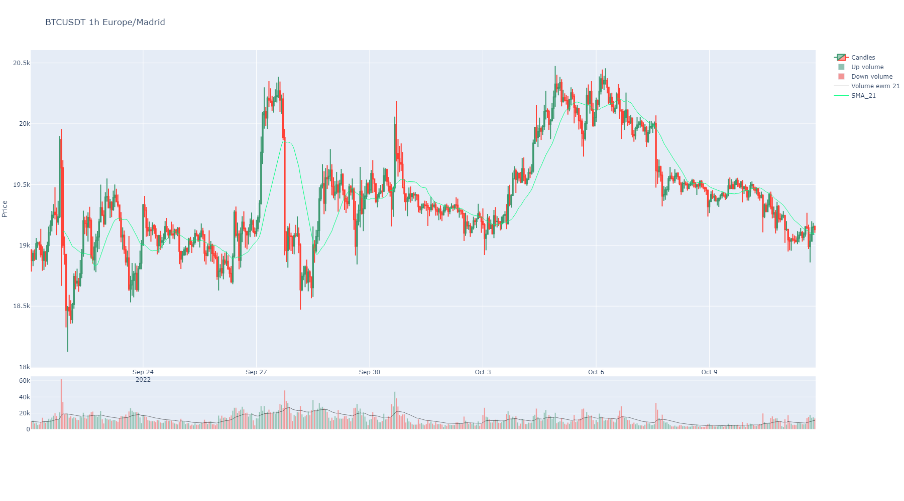
- ema(window: int = 21, column: str = 'Close', inplace=True, suffix: str = '', color: str | int = None, **kwargs) Series[source]¶
Generate technical indicator Exponential Moving Average.
- Parameters:
window (int) – Rolling window including the current candles when calculating the indicator.
column (str) – Column applied. Default is Close.
inplace (bool) – Make it permanent in the instance or not.
suffix (str) – A decorative suffix for the name of the column created.
color (str or int) – Color to show when charts. It can be any color from plotly library or index number in that list. <https://community.plotly.com/t/plotly-colours-list/11730>
kwargs – Optional plotly args from https://github.com/twopirllc/pandas-ta/blob/main/pandas_ta/overlap/ema.py
- Returns:
pd.Series
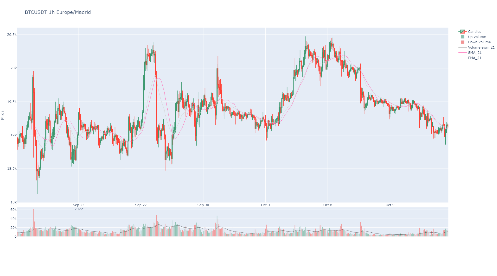
- supertrend(length: int = 10, multiplier: int = 3, inplace=True, suffix: str = None, colors: list = None, **kwargs) DataFrame[source]¶
Generate technical indicator Supertrend.
- Parameters:
length (int) – Rolling window including the current candles when calculating the indicator.
multiplier (int) – Indicator multiplier applied.
inplace (bool) – Make it permanent in the instance or not.
suffix (str) – A decorative suffix for the name of the column created.
colors (list) – Defaults to red and green.
kwargs – Optional plotly args from https://github.com/twopirllc/pandas-ta/blob/main/pandas_ta/overlap/supertrend.py.
- Returns:
pd.DataFrame
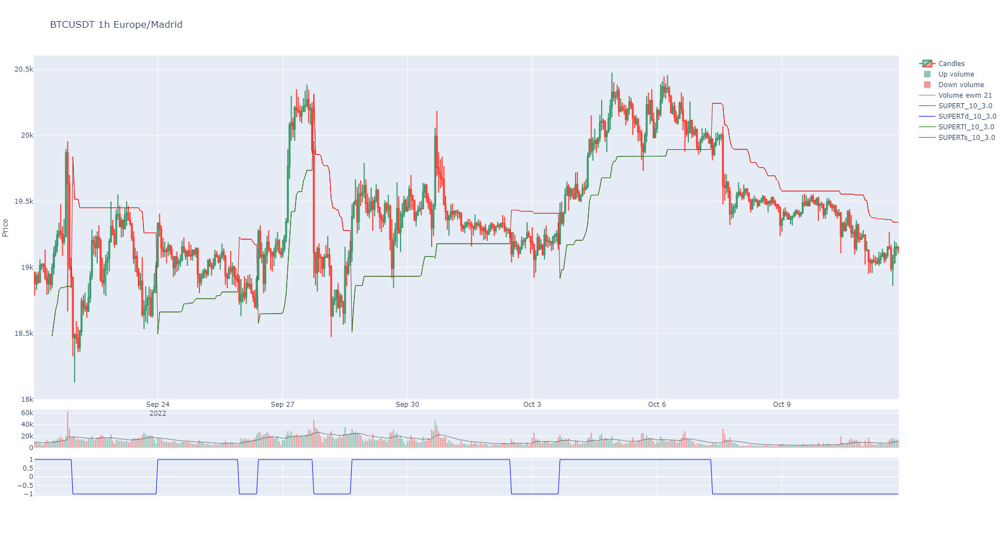
- macd(fast: int = 12, slow: int = 26, smooth: int = 9, inplace: bool = True, suffix: str = '', colors: list = None, **kwargs) DataFrame[source]¶
Generate technical indicator Moving Average, Convergence/Divergence (MACD).
- Parameters:
fast (int) – Fast rolling window including the current candles when calculating the indicator.
slow (int) – Slow rolling window including the current candles when calculating the indicator.
smooth (int) – Factor to apply a smooth in values. A smooth is a kind of moving average in short period like 3 or 9.
inplace (bool) – Make it permanent in the instance or not.
suffix (str) – A decorative suffix for the name of the column created.
colors (list) –
A list of colors for the MACD dataframe columns. Is the color to show when charts. It can be any color from plotly library or a number in the list of those. Default colors defined.
kwargs – Optional from https://github.com/twopirllc/pandas-ta/blob/main/pandas_ta/momentum/macd.py
- Returns:
pd.Series
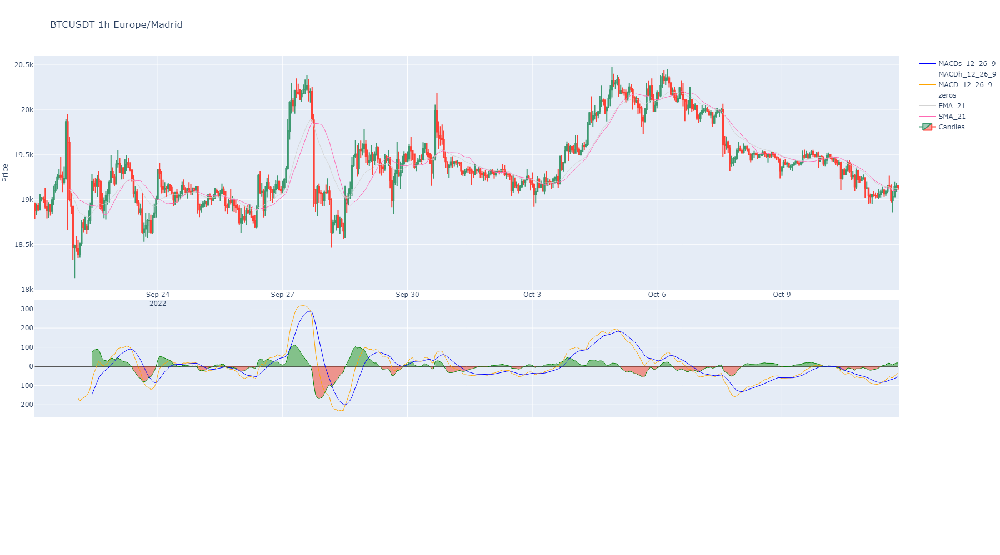
- rsi(length: int = 14, inplace: bool = True, suffix: str = '', color: str | int = None) Series[source]¶
Relative Strength Index (RSI).
- Parameters:
- Returns:
A Pandas Series
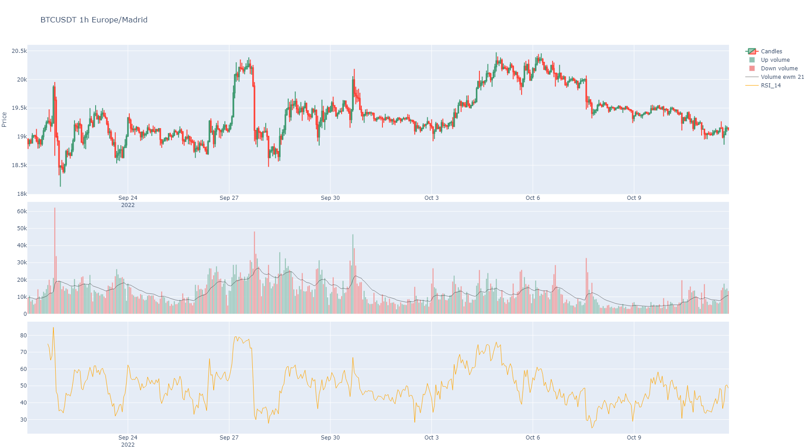
- stoch_rsi(rsi_length: int = 14, k_smooth: int = 3, d_smooth: int = 3, inplace: bool = True, suffix: str = '', colors: list = None, **kwargs) DataFrame[source]¶
Stochastic Relative Strength Index (RSI) with a fast and slow exponential moving averages.
- Parameters:
rsi_length (int) – Default is 21
k_smooth (int) – Smooth fast line with a moving average of some periods. default is 3.
d_smooth (int) – Smooth slow line with a moving average of some periods. default is 3.
inplace (bool) – Make it permanent in the instance or not.
suffix (str) – A decorative suffix for the name of the column created.
colors (list) – Is the color to show when charts.
kwargs – Optional from https://github.com/twopirllc/pandas-ta/blob/main/pandas_ta/momentum/stochrsi.py
- Returns:
A Pandas DataFrame
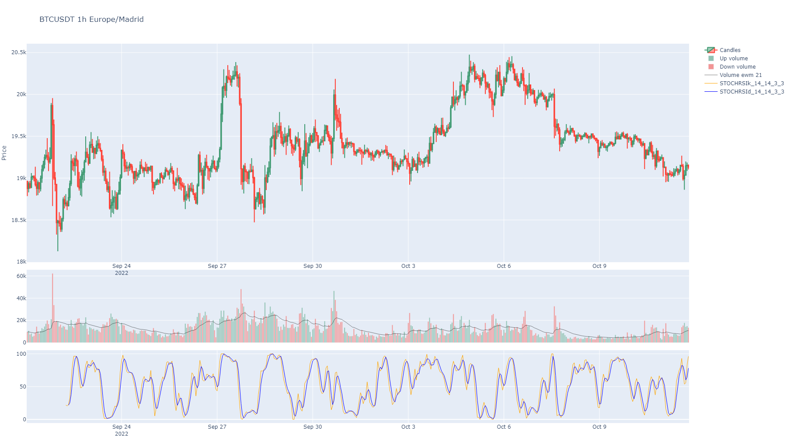
- on_balance_volume(inplace: bool = True, suffix: str = '', color: str | int = None, **kwargs) Series[source]¶
On balance indicator.
- Parameters:
inplace (bool) – Make it permanent in the instance or not.
suffix (str) – A decorative suffix for the name of the column created.
kwargs – Optional from https://github.com/twopirllc/pandas-ta/blob/main/pandas_ta/volume/obv.py
- Returns:
A Pandas Series
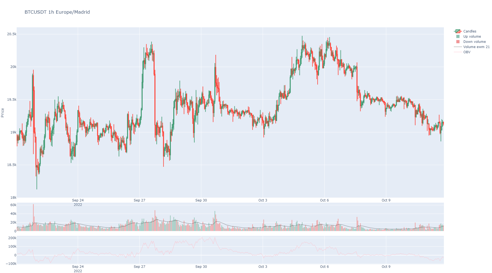
- accumulation_distribution(inplace: bool = True, suffix: str = '', color: str | int = None, **kwargs) Series[source]¶
Accumulation/Distribution indicator.
- Parameters:
inplace (bool) – Make it permanent in the instance or not.
suffix (str) – A decorative suffix for the name of the column created.
color (str or int) – Is the color to show when plotting or index in that list.
kwargs – Optional from https://github.com/twopirllc/pandas-ta/blob/main/pandas_ta/volume/ad.py
- Returns:
A Pandas Series
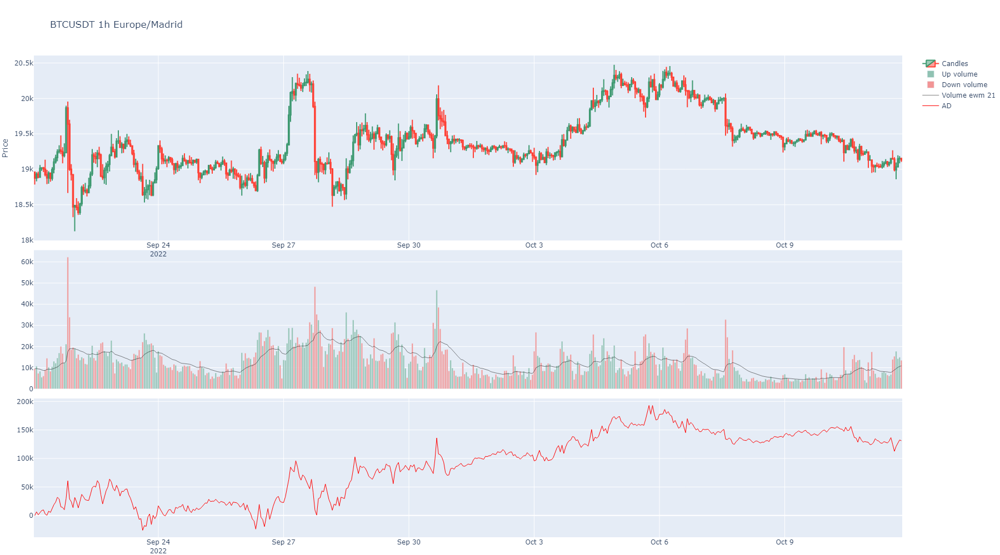
- vwap(anchor: str = 'D', inplace: bool = True, suffix: str = '', color: str | int = None, **kwargs) Series[source]¶
Volume Weighted Average Price.
- Parameters:
anchor (str) – How to anchor VWAP. Depending on the index values, it will implement various Timeseries Offset Aliases as listed here: https://pandas.pydata.org/pandas-docs/stable/user_guide/timeseries.html#timeseries-offset-aliases Default: “D”, that means calendar day frequency.
inplace (bool) – Make it permanent in the instance or not.
suffix (str) – A decorative suffix for the name of the column created.
color (str or int) – Is the color to show when plotting or index in that list.
kwargs – Optional from https://github.com/twopirllc/pandas-ta/blob/main/pandas_ta/overlap/vwap.py
- Returns:
A Pandas Series
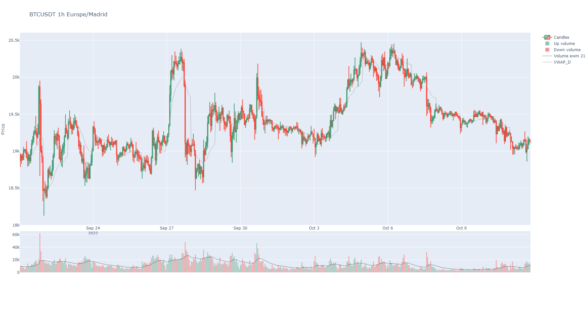
- atr(length: int = 14, inplace: bool = True, suffix: str = '', color: str | int = None, **kwargs) Series[source]¶
Average True Range.
- Parameters:
length (str) – Window period to obtain ATR. Default is 14.
inplace (bool) – Make it permanent in the instance or not.
suffix (str) – A decorative suffix for the name of the column created.
color (str or int) – Is the color to show when plotting or index in that list.
kwargs – Optional from https://github.com/twopirllc/pandas-ta/blob/main/pandas_ta/volatility/atr.py
- Returns:
A Pandas Series
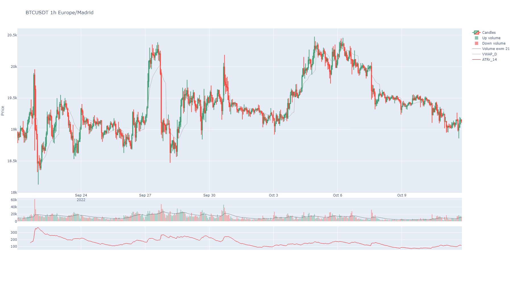
- cci(length: int = 14, scaling: int = None, inplace: bool = True, suffix: str = '', color: str | int = None, **kwargs) Series[source]¶
Compute the Commodity Channel Index (CCI) for NIFTY based on the 14-day moving average. CCI can be used to determine overbought and oversold levels.
Readings above +100 can imply an overbought condition
Readings below −100 can imply an oversold condition.
However, one should be careful because security can continue moving higher after the CCI indicator becomes overbought. Likewise, securities can continue moving lower after the indicator becomes oversold.
- Parameters:
length (str) – Window period to obtain ATR. Default is 14.
scaling (str) – Scaling Constant. Default: 0.015.
inplace (bool) – Make it permanent in the instance or not.
suffix (str) – A decorative suffix for the name of the column created.
color (str or int) – Is the color to show when plotting or index in that list.
kwargs – Optional from https://github.com/twopirllc/pandas-ta/blob/main/pandas_ta/momentum/cci.py
- Returns:
A Pandas Series
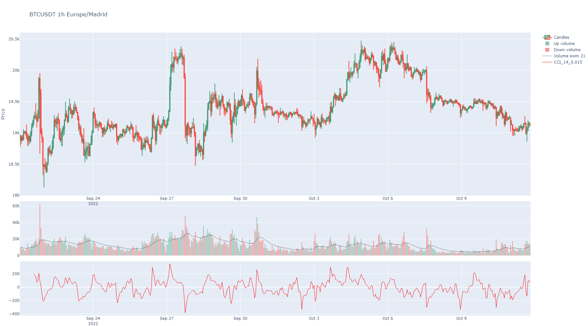
- eom(length: int = 14, divisor: int = 100000000, drift: int = 1, inplace: bool = True, suffix: str = '', color: str | int = None, **kwargs) Series[source]¶
Ease of Movement (EMV) can be used to confirm a bullish or a bearish trend. A sustained positive Ease of Movement together with a rising market confirms a bullish trend, while a negative Ease of Movement values with falling prices confirms a bearish trend. Apart from using as a standalone indicator, Ease of Movement (EMV) is also used with other indicators in chart analysis.
- Parameters:
length (str) – The short period. Default: 14
divisor (str) – Scaling Constant. Default is 100000000.
drift (str) – The diff period. Default is 1
inplace (bool) – Make it permanent in the instance or not.
suffix (str) – A decorative suffix for the name of the column created.
color (str or int) – Is the color to show when plotting or index in that list.
kwargs – Optional from https://github.com/twopirllc/pandas-ta/blob/main/pandas_ta/volume/eom.py
- Returns:
A Pandas Series
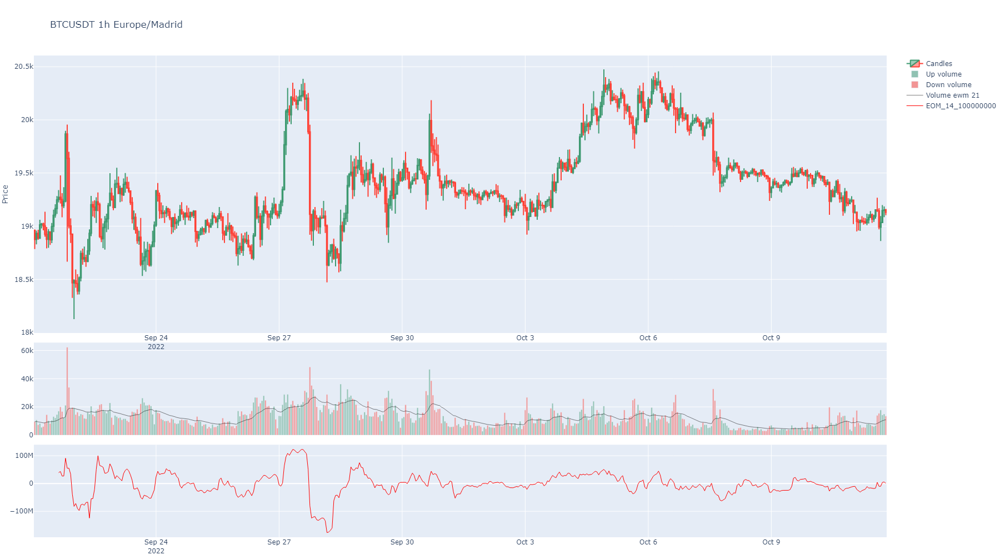
- roc(length: int = 1, escalar: int = 100, inplace: bool = True, suffix: str = '', color: str | int = None, **kwargs) Series[source]¶
The Rate of Change (ROC) is a technical indicator that measures the percentage change between the most recent price and the price “n” day’s ago. The indicator fluctuates around the zero line.
- Parameters:
length (str) – The short period. Default: 1
escalar (str) – How much to magnify. Default: 100.
inplace (bool) – Make it permanent in the instance or not.
suffix (str) – A decorative suffix for the name of the column created.
color (str or int) – Is the color to show when plotting or index in that list.
kwargs – Optional from https://github.com/twopirllc/pandas-ta/blob/main/pandas_ta/momentum/roc.py
- Returns:
A Pandas Series
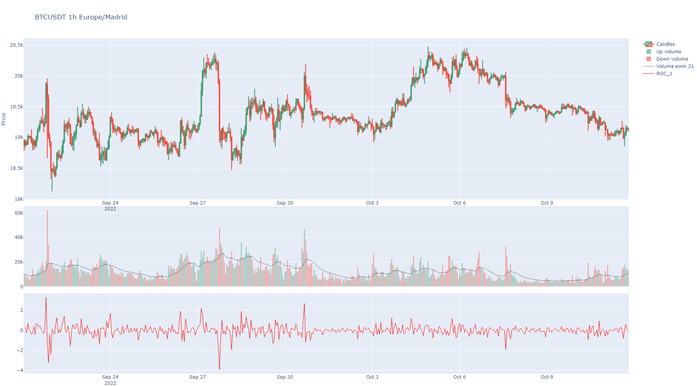
- bbands(length: int = 5, std: int = 2, ddof: int = 0, inplace: bool = True, suffix: str = '', colors: list = None, my_fill_color: str = 'rgba(47, 48, 56, 0.2)', **kwargs) DataFrame[source]¶
These bands consist of an upper Bollinger band and a lower Bollinger band and are placed two standard deviations above and below a moving average. Bollinger bands expand and contract based on the volatility. During a period of rising volatility, the bands widen, and they contract as the volatility decreases. Prices are considered to be relatively high when they move above the upper band and relatively low when they go below the lower band.
- Parameters:
length (int) – The short period. Default: 5
std (int) – The long period. Default: 2
ddof (int) – Degrees of Freedom to use. Default: 0
inplace (bool) – Make it permanent in the instance or not.
suffix (str) – A decorative suffix for the name of the column created.
colors (list) – A list of colors for the indicator dataframe columns. Is the color to show when charts. It can be any color from plotly library or a number in the list of those. Default colors defined. https://community.plotly.com/t/plotly-colours-list/11730
my_fill_color (str) – An rgba color code to fill between bands area. https://rgbacolorpicker.com/
kwargs – Optional from https://github.com/twopirllc/pandas-ta/blob/main/pandas_ta/volatility/bbands.py
- Returns:
pd.Series
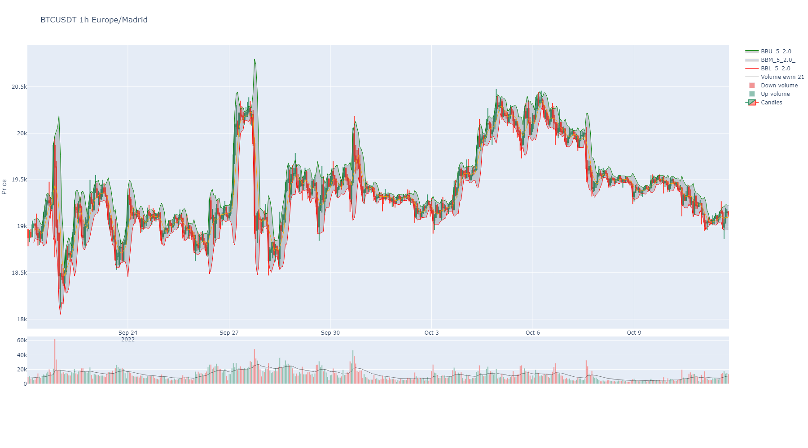
- stoch(k_length: int = 14, stoch_d=3, k_smooth: int = 1, inplace: bool = True, suffix: str = '', colors: list = None, **kwargs) DataFrame[source]¶
Stochastic Oscillator with a fast and slow exponential moving averages.
- Parameters:
k_length (int) – The Fast %K period. Default: 14
stoch_d (int) – The Slow %K period. Default: 3
k_smooth (int) – The Slow %D period. Default: 3
inplace (bool) – Make it permanent in the instance or not.
suffix (str) – A decorative suffix for the name of the column created.
colors (list) – Is the color to show when charts.
kwargs – Optional from https://github.com/twopirllc/pandas-ta/blob/main/pandas_ta/momentum/stoch.py
- Returns:
A Pandas DataFrame
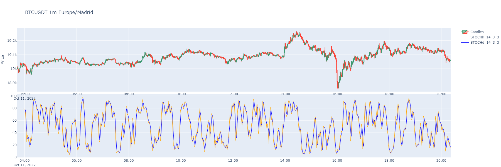
- ichimoku(tenkan: int = 9, kijun: int = 26, chikou_span: int = 26, senkou_cloud_base: int = 52, inplace: bool = True, suffix: str = '', colors: list = None) DataFrame[source]¶
The Ichimoku Cloud is a collection of technical indicators that show support and resistance levels, as well as momentum and trend direction. It does this by taking multiple averages and plotting them on a chart. It also uses these figures to compute a “cloud” that attempts to forecast where the price may find support or resistance in the future.
- Parameters:
tenkan (int) – The short period. It’s the half sum of max and min price in the window. Default: 9
kijun (int) – The long period. It’s the half sum of max and min price in the window. Default: 26
chikou_span (int) – Close of the next 26 bars. Util for spotting what happened with other ichimoku lines and what happened before Default: 26.
senkou_cloud_base – Period to obtain kumo cloud base line. Default is 52.
inplace (bool) – Make it permanent in the instance or not.
suffix (str) – A decorative suffix for the name of the column created.
colors (list) – A list of colors for the indicator dataframe columns. Is the color to show when charts. It can be any color from plotly library or a number in the list of those. Default colors defined. https://community.plotly.com/t/plotly-colours-list/11730
- Returns:
pd.Series

- alternating_fractal(max_period: int = None, inplace: bool = True, overlap_plot=True, with_trend: bool = True, suffix: str = '', colors: list = None) tuple[Series | None, float | None, float | None][source]¶
Obtains the minim value for fractal_w periods as fractal is pure alternating from max to min to max etc. In other words, max and mins alternates in regular rhythm without any tow max or two mins consecutively.
This custom indicator shows the minimum period in finding a pure alternating fractal. It is some kind of rhythm in price indicator, the most period needed, the slow price rhythm.
- Parameters:
max_period (int) – Default is len of dataframe. This method will check from 2 to the max period value to find a alternating max to mins.
inplace (bool) – Make it permanent in the instance or not.
overlap_plot (bool) – If True, it will overlap the indicator plot with the price plot.
with_trend (bool) – If true, it will return maximums diff mean and minimums diff mean also.
suffix (str) – A decorative suffix for the name of the column created.
colors (list) – A list of colors for the indicator dataframe columns. Is the color to show when charts. It can be any color from plotly library or a number in the list of those. Default colors defined. https://community.plotly.com/t/plotly-colours-list/11730
- Return pd.DataFrame:
A dataframe with two columns, one with 1 or -1 for local max or local min to tag, and other with price values for that points. Alternatively, maximums and minimums diff mean will be returned.

- fractal(period: int = 5, inplace: bool = True, overlap_plot=True, suffix: str = '', colors: list = None) DataFrame[source]¶
The fractal indicator is based on a simple price pattern that is frequently seen in financial markets. Outside of trading, a fractal is a recurring geometric pattern that is repeated on all time frames. From this concept, the fractal indicator was devised. The indicator isolates potential turning points on a price chart. It then draws arrows to indicate the existence of a pattern.
https://www.investopedia.com/terms/f/fractal.asp
- Parameters:
period (int) – Default is 2. Count of neighbour candles to match max or min tags.
inplace (bool) – Make it permanent in the instance or not.
overlap_plot (bool) – If True, it will overlap the indicator plot with the price plot.
suffix (str) – A decorative suffix for the name of the column created.
colors (list) – A list of colors for the indicator dataframe columns. Is the color to show when charts. It can be any color from plotly library or a number in the list of those. Default colors defined. https://community.plotly.com/t/plotly-colours-list/11730
- Return pd.Series:
A serie with 1 or -1 for local max or local min to tag.
- get_market_profile(bins: int = 100, hours: int = None, minutes: int = None, startTime: int | str = None, endTime: int | str = None, from_agg_trades=False, from_atomic_trades=False, time_zone: str = None) DataFrame | None[source]¶
Generates a market profile dataframe from trade or kline data. The market profile is a histogram of trading volumes at different price levels.
- Parameters:
bins – The number of price levels (bins) to include in the market profile.
hours – If specified, only the last ‘hours’ hours of data are used to generate the market profile.
minutes – If specified, only the last ‘minutes’ minutes of data are used to generate the market profile.
startTime – If specified, only data after this timestamp or date (in format %Y-%m-%d %H:%M:%S) are used.
endTime – If specified, only data before this timestamp or date (in format %Y-%m-%d %H:%M:%S) are used.
from_agg_trades – If True, aggregated trades data are used to generate the market profile.
from_atomic_trades – If True, atomic trades data are used to generate the market profile.
time_zone – The time zone to use for time index conversion (e.g., “Europe/Madrid”).
- Returns:
A DataFrame representing the market profile, or None if no suitable data are available.

- volume_profile(bins: int = 50, value_area_pct: float = 0.7, from_agg_trades: bool = False, from_atomic_trades: bool = False, hours: int = None, minutes: int = None, startTime: int | str = None, endTime: int | str = None, time_zone: str = None) dict | None[source]¶
Volume Profile (VPVR): volumen por nivel de precio + POC, Value Area y nodos HVN/LVN.
Calcula el market profile (reutiliza
get_market_profile()) y le aplica las metricas de un Volume Profile: POC (nivel de mayor volumen, el iman), Value Area (rango que concentravalue_area_pctdel volumen) y los HVN/LVN (nodos de alto/bajo volumen: aceptacion vs huecos por donde el precio viaja rapido). Devuelve numeros para razonar sin mirar el grafico; para el grafico usaplot_volume_profile().- Parameters:
bins (int) – numero de niveles del histograma. Default 50.
value_area_pct (float) – fraccion del volumen dentro de la Value Area. Default 0.70.
from_agg_trades (bool) – usa aggregated trades (requiere
get_agg_trades()antes).from_atomic_trades (bool) – usa atomic trades (requiere
get_atomic_trades()antes).hours (int) – si se pasa, solo las ultimas ‘hours’ horas.
minutes (int) – si se pasa, solo los ultimos ‘minutes’ minutos.
startTime – timestamp/fecha de inicio (%Y-%m-%d %H:%M:%S).
endTime – timestamp/fecha de fin.
time_zone (str) – zona horaria para el indice temporal.
- Returns:
dict con
poc,vah,val,value_area_pct,total_volume,bins(lista de{price, low, high, volume}),hvnylvn.Nonesi no hay datos.
Ejemplo:
sym = binpan.Symbol('BTCUSDT', '15m', limit=500) vp = sym.volume_profile(bins=50) print(vp["poc"], vp["vah"], vp["val"])
- get_maker_taker_buy_ratios(window: int = 14, inplace=True, colors: list = None, suffix: str = '', nans_to_zeros=True) DataFrame[source]¶
Generates the makers versus makers+takers volume ratio by each_kline. Also adds a moving average of the ratio.
- Parameters:
window (int) – The window of the moving average.
inplace (bool) – Permanent or not. Default is false, because of some testing required sometimes.
suffix (str) – A string to decorate resulting Pandas series name.
colors (str or int) – A colors list. Default is [“orange”, “skyblue”].
nans_to_zeros (bool) – If True, NaNs are converted to zeros.
- Returns:
A pandas series with the ratio and the moving average.
- get_taker_maker_ratio_profile(bins: int = 100, hours: int = None, minutes: int = None, startTime: int | str = None, endTime: int | str = None, from_agg_trades=False, from_atomic_trades=False, time_zone: str = None) DataFrame | None[source]¶
Generates a market profile of the makers versus makers+takers volume ratio by each_kline.
- Parameters:
bins – The number of price levels (bins) to include in the market profile.
hours – If specified, only the last ‘hours’ hours of data are used to generate the market profile.
minutes – If specified, only the last ‘minutes’ minutes of data are used to generate the market profile.
startTime – If specified, only data after this timestamp or date (in format %Y-%m-%d %H:%M:%S) are used.
endTime – If specified, only data before this timestamp or date (in format %Y-%m-%d %H:%M:%S) are used.
from_agg_trades – If True, aggregated trades data are used to generate the market profile.
from_atomic_trades – If True, atomic trades data are used to generate the market profile.
time_zone – The time zone to use for time index conversion (e.g., “Europe/Madrid”).
- Returns:
A DataFrame representing the market profile, or None if no suitable data are available.
- static pandas_ta_indicator(name: str, **kwargs) None[source]¶
Calls any indicator in pandas_ta library with function name as first argument and any kwargs the function will use.
Generic calls are not added to object, just returned.
More info: https://github.com/twopirllc/pandas-ta
- Parameters:
name (str) – A function name. In example: ‘massi’ for Mass Index or ‘rsi’ for RSI indicator.
kwargs – Arguments for the requested indicator. Review pandas_ta info: https://github.com/twopirllc/pandas-ta#features
- Returns:
Whatever returns pandas_ta
Example:
sym = binpan.Symbol(symbol='LUNCBUSD', tick_interval='1m') sym.pandas_ta_indicator(name='ichimoku', **{ 'high': sym.df['High'], 'low': sym.df['Low'], 'close': sym.df['Close'], 'tenkan': 9, 'kijun ': 26, 'senkou ': 52}) ( ISA_9 ISB_26 ITS_9 IKS_26 ICS_26 LUNCBUSD 1m UTC 2022-10-06 23:27:00+00:00 NaN NaN NaN NaN 0.000285 2022-10-06 23:28:00+00:00 NaN NaN NaN NaN 0.000285 2022-10-06 23:29:00+00:00 NaN NaN NaN NaN 0.000285 2022-10-06 23:30:00+00:00 NaN NaN NaN NaN 0.000285 2022-10-06 23:31:00+00:00 NaN NaN NaN NaN 0.000285 ... ... ... ... ... ... 2022-10-07 16:01:00+00:00 0.000292 0.000293 0.000291 0.000291 NaN 2022-10-07 16:02:00+00:00 0.000292 0.000293 0.000292 0.000291 NaN 2022-10-07 16:03:00+00:00 0.000292 0.000293 0.000292 0.000291 NaN 2022-10-07 16:04:00+00:00 0.000292 0.000293 0.000292 0.000291 NaN 2022-10-07 16:05:00+00:00 0.000292 0.000293 0.000292 0.000291 NaN [999 rows x 5 columns], ISA_9 ISB_26 2022-10-10 16:05:00+00:00 0.000292 0.000293 2022-10-11 16:05:00+00:00 0.000292 0.000293 2022-10-12 16:05:00+00:00 0.000292 0.000293 2022-10-13 16:05:00+00:00 0.000292 0.000293 2022-10-14 16:05:00+00:00 0.000292 0.000293 ... ... ... 2022-11-08 16:05:00+00:00 0.000291 0.000292 2022-11-09 16:05:00+00:00 0.000291 0.000292 2022-11-10 16:05:00+00:00 0.000292 0.000292 2022-11-11 16:05:00+00:00 0.000292 0.000292 2022-11-14 16:05:00+00:00 0.000292 0.000292 [26 rows x 2 columns])
- support_resistance(from_atomic: bool = False, from_aggregated: bool = False, max_clusters: int = 5, by_quantity: float = None, simple: bool = True, inplace=True, colors: list = None) tuple[list[float], list[float]][source]¶
Calculate support and resistance levels for the Symbol based on either atomic trades or aggregated trades.
- Parameters:
from_atomic (bool) – If True, support and resistance levels will be calculated using atomic trades.
from_aggregated (bool) – If True, support and resistance levels will be calculated using aggregated trades.
max_clusters (int) – If passed, fixes count of levels of support and resistance. Default is 5.
by_quantity (float) – It takes each price into account by how many times the specified quantity appears in “Quantity” column.
simple (bool) – If True, it will calculate support and resistance levels merged. Just levels. Default is True.
inplace (bool) – If True, it will replace the current dataframe with the new one. Default is True.
colors (list) – A list of colors for the indicator dataframe columns. Is the color to show when charts. It can be any color from plotly library or a number in the list of those. Default colors defined. https://community.plotly.com/t/plotly-colours-list/11730
- Returns:
A tuple containing two lists: the first list contains support levels, and the second list contains resistance levels.

- rolling_support_resistance(minutes_window: int = None, time_steps_minutes: int = None, discrete_interval: str = None, from_atomic: bool = False, from_aggregated: bool = False, max_clusters: int = 5, by_quantity: bool = True, simple: bool = True, inplace: bool = True, delayed: int = 0, colors: list = None) DataFrame | None[source]¶
Calculate support and resistance levels for the Symbol based on either atomic trades or aggregated trades in a rolling window. Also from klines supported, but less accurate. It returns a pandas dataframe with each column representing ordered levels from lower to higher for support and resistance. The function iterates in steps of a minutes quantity or a discrete interval.
If discrete_interval is passed, it will ignore time_steps_minutes and minutes_window and will use this interval to calculate the rolling support and resistance minutes_window and time_steps_minutes. It can be any of the binance kline ones: ‘1m’, ‘3m’, ‘5m’, ‘15m’, ‘30m’, ‘1h’, ‘2h’, ‘4h’, etc
The parameter delayed is useful when you want to calculate the rolling support and resistance with a delay. For example, if you want to calculate the rolling support and resistance with the last 5 minutes of data, but you want to project it 5 minutes after the last minute of the window, you can pass delayed=1 (1 step of the interval selected). Useful for projecting support and resistance levels in the future.
If simple parameter is True, it will calculate support and resistance levels merged. Just levels. Default is True.
Example: If you want to calculate the rolling support and resistance with and interval of 24h and a delayed of 1, this will add past 24h support and resistance levels to the current dataframe
my_symbol.rolling_support_resistance(discrete_interval='1d', delayed=1)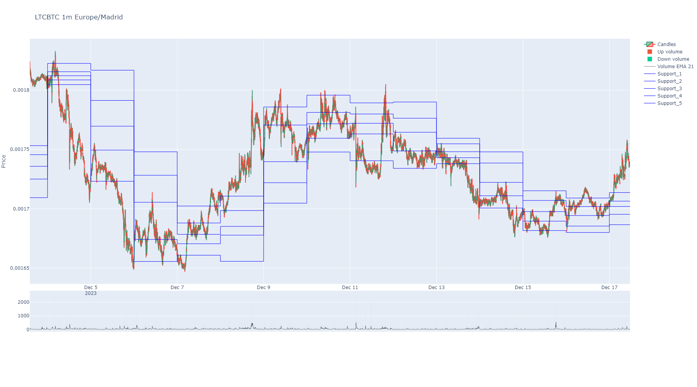
Example: Not discrete mode but same 24 h intervals and not delayed.
sym.rolling_support_resistance(minutes_window=24*60, time_steps_minutes=24*60, max_clusters=5)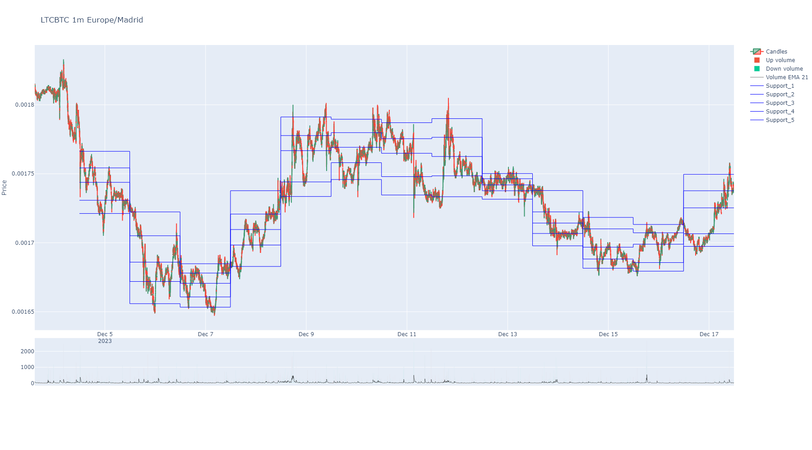
- Parameters:
minutes_window (int) – A rolling window of time in minutes. Whe using trades, it will calculate window by time index.
time_steps_minutes (int) – Loop steps in minutes. Default is 10. Each step will calculate a new window data.
discrete_interval (str) – If passed, it will ignore time_steps_minutes and minutes_window and will use this interval to calculate the rolling support and resistance. It can be any of the following: ‘1m’, ‘3m’, ‘5m’, ‘15m’, ‘30m’, ‘1h’, ‘2h’, ‘4h’, etc
from_atomic (bool) – If True, support and resistance levels will be calculated using atomic trades.
from_aggregated (bool) – If True, support and resistance levels will be calculated using aggregated trades.
max_clusters (int) – If passed, fixes count of levels of support and resistance. Default is 5.
by_quantity (float) – It takes each price into account by how many times the specified quantity appears in “Quantity” column.
simple (bool) – If True, it will calculate support and resistance levels merged. Just levels. Default is True.
inplace (bool) – If True, it will replace the current dataframe with the new one. Default is True.
delayed (int) – If passed, it will project the rolling support and resistance levels in the future. Default is 0 and means 0 windows projected in the future.
colors (list) – A list of colors for the indicator dataframe columns. Is the color to show when charts. It can be any color from plotly library or a number in the list of those. Default colors defined. https://community.plotly.com/t/plotly-colours-list/11730
- Return pd.DataFrame:
A pandas dataframe with each column representing ordered levels from higher to lower for support and resistance.
- time_centroids(from_atomic: bool = False, from_aggregated: bool = False, max_clusters: int = 5, by_quantity: float = None, simple: bool = True) tuple[list[float], list[float]][source]¶
Calculate centroids for timestamps of more activity in taker buys or takers sells.
- Parameters:
from_atomic (bool) – If True, centroids will be calculated using atomic trades.
from_aggregated (bool) – If True, centroids will be calculated using aggregated trades.
max_clusters (int) – If passed, fixes count of levels of support and resistance. Default is 5.
by_quantity (float) – It takes each price into account by how many times the specified quantity appears in “Quantity” column.
simple (bool) – If True, it will calculate centroids merged. Just levels, not buy or sell centroids. Default is True.
- Returns:
A tuple containing two lists: the first list contains buy centroids, and the second list contains sell centroids.

{kind=link}
{kind=link}
{kind=link}
{kind=link}
{kind=link}
{kind=link}
{kind=link}
{kind=link}
{kind=link}
{kind=link}
{kind=link}
{kind=link}
{kind=link}
{kind=link}
{kind=link}